Mira tu disco entero. Libera espacio en segundos.
SpaceAnalyzer es un analizador de espacio en disco que dibuja tu disco como un mapa de bloques: cuanto más grande es el bloque, más ocupa. Los vídeos olvidados, las descargas de hace años y las cachés gigantes saltan a la vista, y con un clic van a la papelera.
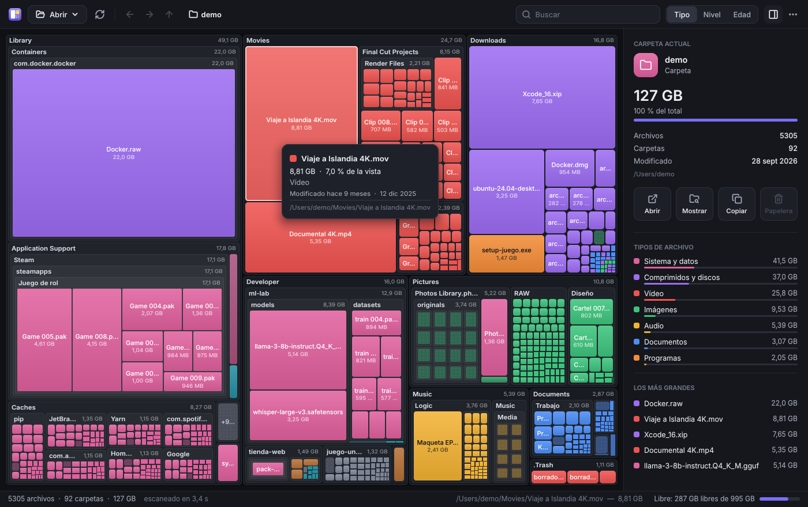
Tres pasos para recuperar tu disco
Sin configurar nada y sin esperar a instalaciones: ábrelo y empieza.
Elige qué analizar
Una unidad, tu carpeta personal o cualquier carpeta. También puedes arrastrarla a la ventana.
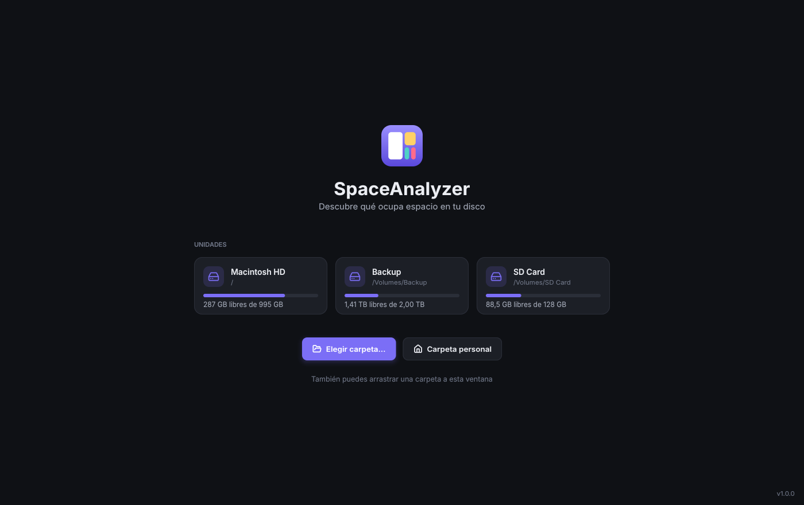
Explora el mapa
Cada bloque es una carpeta o un archivo, a su tamaño real. Doble clic para entrar y rueda para salir.
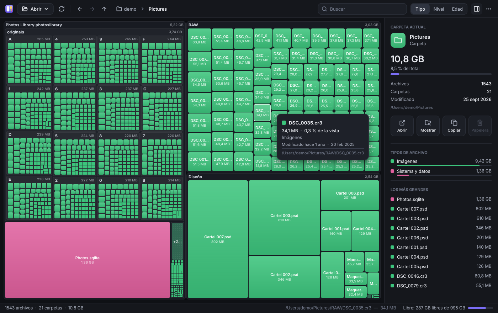
Libera espacio
Clic derecho y a la papelera. Siempre te pide confirmación, y el mapa se actualiza al momento.
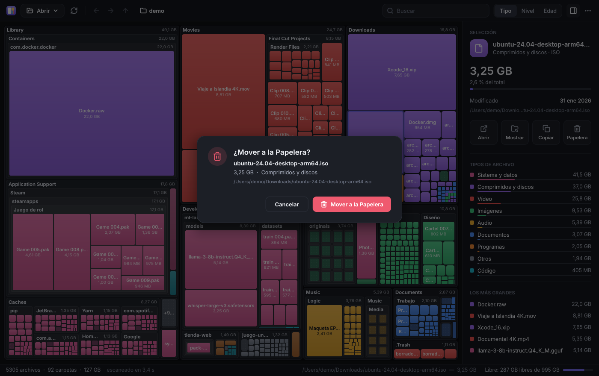
Características
Todo tu disco, de un vistazo
Olvídate de abrir carpeta por carpeta. El mapa muestra a la vez todas las carpetas y archivos de tu disco, anidados como en el clásico SpaceMonger, cada uno con su nombre y su tamaño.
- Bloques casi cuadrados, fáciles de comparar (algoritmo squarified)
- Detalles al pasar el ratón: tamaño, porcentaje, archivos y fecha
- El espacio libre de la unidad, como un bloque más
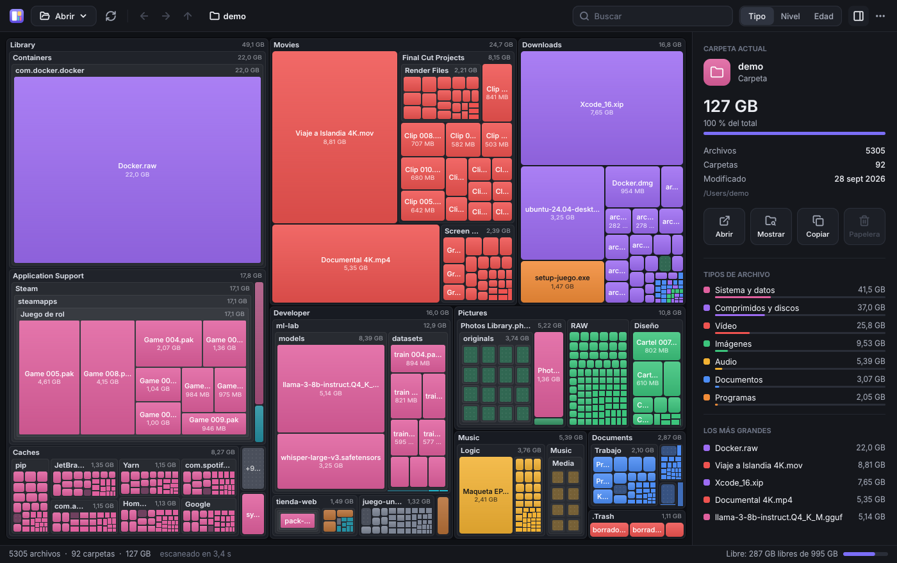
Colorea según lo que quieras descubrir
Por tipo de archivo: vídeo, fotos, música, documentos, programas, juegos… Ves al instante qué clase de archivos se come tu disco.
Por nivel de carpeta, con el aspecto clásico de SpaceMonger: cada nivel tiene su color y la estructura se lee de un vistazo.
Por antigüedad: un mapa de calor que va de lo reciente, en rojo, a lo que no tocas desde hace años, en violeta. Perfecto para hacer limpieza.
Encuentra cualquier cosa escribiendo
Empieza a escribir y el mapa resalta al instante lo que coincide. También ves cuántos archivos son y cuánto ocupan en total.
- Sin cuadros de diálogo: escribe y listo
- Haz clic en un tipo de archivo del panel para resaltarlo en el mapa
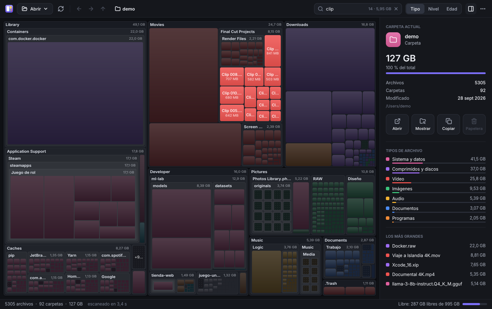
Todo a un clic derecho
Abrir, mostrar en Finder o en el Explorador, copiar la ruta, volver a escanear o enviar a la papelera. El panel lateral te enseña los archivos más grandes de lo que estás viendo.
- Atajos de teclado para todo (Supr, ⌫, Ctrl/⌘ + F…)
- Atrás, adelante y migas de pan, como en un navegador
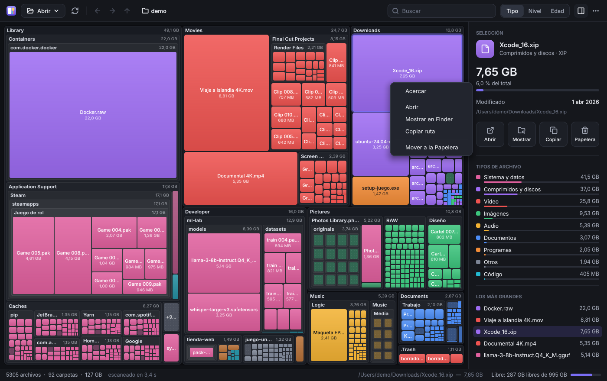
Nunca borra nada sin preguntarte
SpaceAnalyzer solo mueve a la papelera lo que tú eliges, y siempre te pide confirmación antes, así que puedes recuperarlo. Además, tus archivos no salen de tu equipo: solo se conecta a Internet para preguntar si hay una versión nueva.
- No cuenta dos veces los enlaces ni los otros discos
- Tamaño real en disco (archivos dispersos, comprimidos o en la nube)
Claro u oscuro, en español o en inglés
Sigue el tema de tu sistema, o el que tú prefieras, y habla tu idioma. Todo con una interfaz cuidada al detalle.
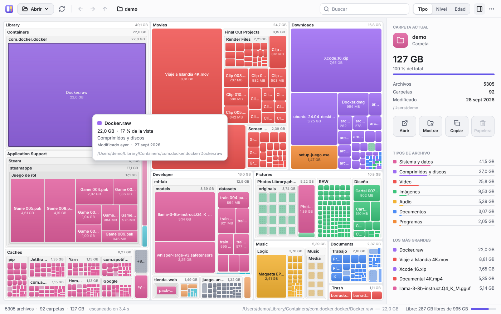
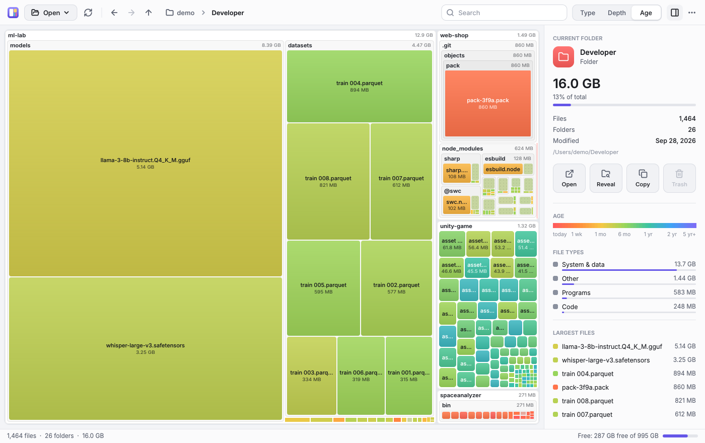
Hecho para Windows, macOS y Linux
La misma app, con los mismos píxeles, en los tres sistemas. Esta es una captura real en Windows:

Captura tomada por la prueba automática que abre la app en Windows en cada cambio.
Pequeño por fuera, rápido por dentro
Nada de frameworks pesados: todo, hasta el texto, se dibuja con C# y .NET 10. El espíritu portable del SpaceMonger original.
Cuidado hasta el último detalle
Haz clic en cualquier imagen para verla en grande.
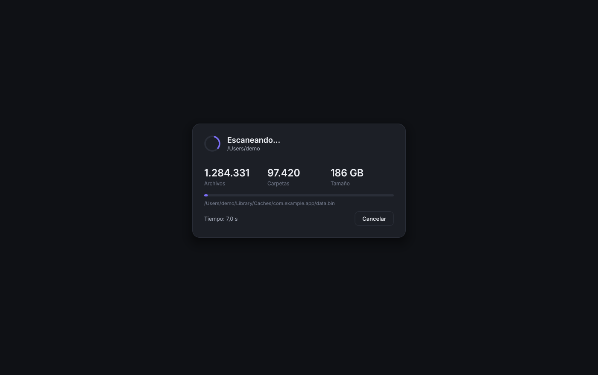
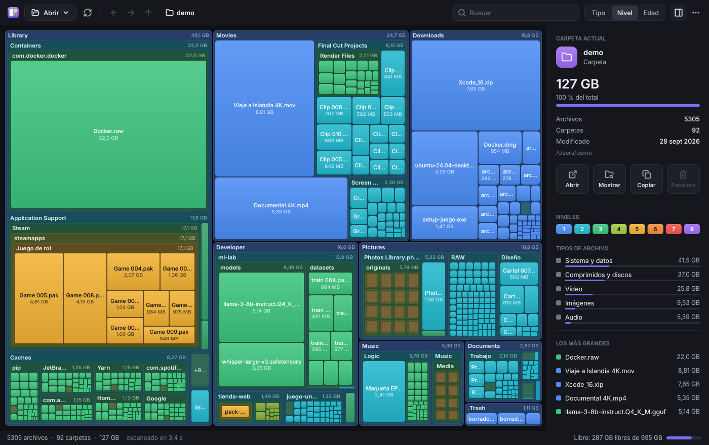
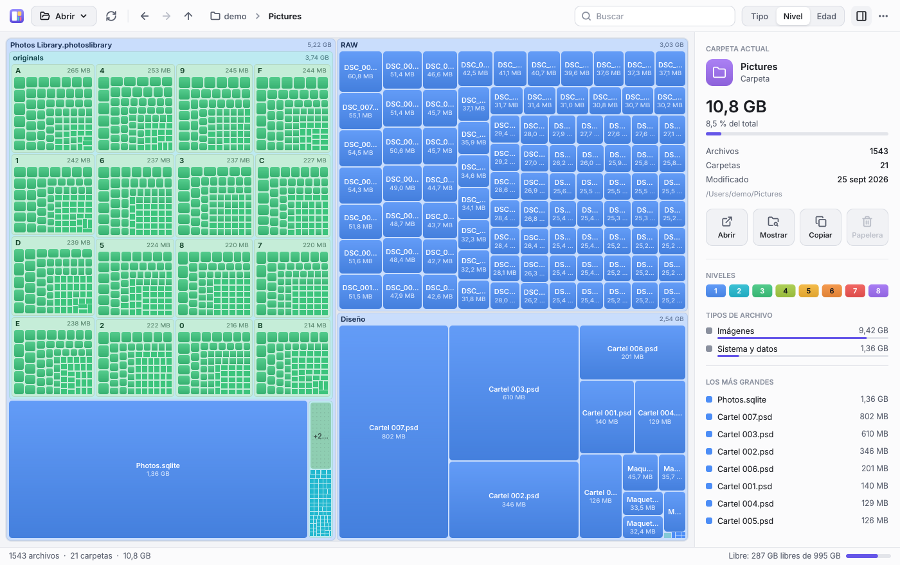
Gratis. Sin registro. Sin instalación.
Cada archivo es la aplicación completa: descárgalo y ábrelo.
Windows
Si aparece «Windows protegió su PC»: Más información → Ejecutar de todas formas.
macOS
Arrástrala a Aplicaciones. Si macOS no la deja abrir: Ajustes del Sistema → Privacidad y seguridad → Abrir igualmente.
Linux
tar -xzf SpaceAnalyzer-linux-x64.tar.gz && ./SpaceAnalyzer
Versiones mini para todos los sistemas, sumas SHA-256 y novedades en la página de la versión.
¿Dudas?
¿Es gratis de verdad?
Sí. Es gratis y de código abierto (licencia MIT), sin anuncios, sin versión de pago y sin registro.
¿Por qué Windows o macOS me avisan al abrirlo?
Porque los ejecutables no están firmados con un certificado de pago. El código es público y cada versión incluye sus sumas SHA-256. Si lo prefieres, puedes compilarlo tú mismo con un solo comando.
¿Puede borrar algo por su cuenta?
No. Solo mueve a la papelera lo que tú eliges, siempre después de pedirte confirmación, así que siempre puedes recuperarlo desde la papelera.
¿Envía mis datos a algún sitio?
No. Todo se analiza en tu equipo y nada sale de él. SpaceAnalyzer solo se conecta a Internet para preguntarle a GitHub cuál es la última versión: al abrirse, como mucho una vez al día (se desactiva en el menú ⋯), o cuando pulsas «Buscar actualizaciones» en «Acerca de».
¿Tengo que instalar algo?
No. Cada descarga es un único archivo que se abre directamente. Las versiones mini pesan unos 500 KB, pero necesitan tener instalado el runtime de .NET 10.
¿Funciona con discos externos o de red?
Sí, con cualquier unidad o carpeta que tu sistema pueda leer. Al escanear no salta a otros volúmenes, así que nada se cuenta dos veces.
¿Por qué pesa tan poco?
Porque no usa ningún framework de interfaz. Todo se dibuja con su propio código en C#: formas, sombras, iconos y el texto, con la fuente Inter incrustada. De cada sistema solo usa una capa mínima para abrir la ventana.
¿En qué se diferencia de WinDirStat, WizTree o DaisyDisk?
Todos te ayudan a ver qué ocupa espacio. SpaceAnalyzer funciona igual en Windows, macOS y Linux, es gratis y de código abierto, y cabe en un único archivo de ~2 MB que no hace falta instalar.
¿Qué es SpaceMonger?
Un clásico de Windows que mostraba el disco como bloques anidados. SpaceAnalyzer recupera esa idea con un diseño moderno, más funciones y soporte para macOS y Linux. Es un proyecto independiente, sin relación con el original.
¿Disco lleno? Descubre por qué en segundos.
Gratis, sin instalación y en un único archivo de ~2 MB.